Prices App - Sales Rep Tools
Cook Medical wanted better communication between their reps, the customers, and the company. Our team embarked on a 1-month ethnography and contextual inquiry study, and designed a number of tools to help reps in the field. The most successful of these tools was the Prices App, which helped create more sales opportunities and saved hundreds of thousands each year.
Introduction
Medical device companies rely on sales representatives for nearly all customer interactions: they often initiate the first customer interactions, execute purchases, and then follow-up with customers for support. Reps are central to inter-connected customer relationship model of organizations and businesses.
Because of their highly integrated relationship with customers, reps need the best tools to provide information to the customer in a timeline manner. The ultimately connect customers (physicians, technicians, hospitals) with the organization (business, supply chain) on a unique personal level.
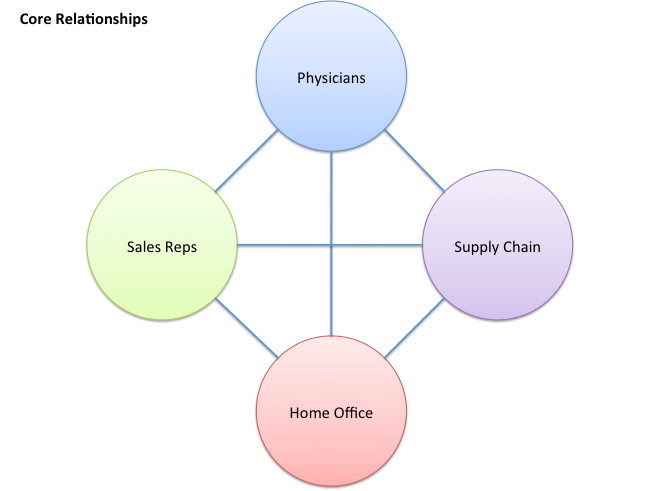User Research
I rode with five Interventional Radiology sales reps across the US and Canada. I spent several days with the reps: answering sales calls, assisting with demonstrations and observing their interactions with customers and other reps.
Participants were considered "high performing" sales representatives within Cook. Their engagement and experience as subject matter experts was helpful in building a stronger understanding of their work and needs.
Findings
Daily rep life
A sales rep's routine varies by territory and specialty, but IR reps usually follow a similar daily pattern:
Begin the day with Prep
This includes packing their equipment bags with sample products, catalogues/sales materials. They prep their car, which acts as a means for product storage, but also doubles as their mobile office.
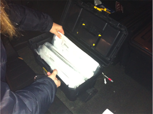Complete sales calls and follow-ups
Sales calls consist mostly of customer service: answering questions about a product and handling defects. They interact with physicians, technicians/nurses and pricing supervisors. Most have been pre-arranged and cold calls are few and far between for established reps.
Reps follow a similar process with each visit: unpack their sample products and support materials, complete the visit, record follow-ups and schedule future visits. If they're meeting with a physician, reps may wait up to an hour to get the attention of the MD in question, so they often stay open and agile to change.
Much of what is discussed during these meetings is either informational ("this product has X success rate", "the stent is composed of Y material") or pricing-related. Pricing questions often require contacting Cook headquarters to verify a price per quantity and customer (contracts vary by customer).
Some reps also keep track of inventory for consignment purposes.
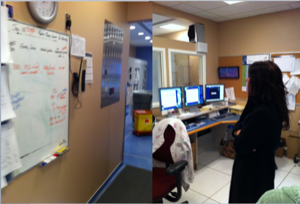 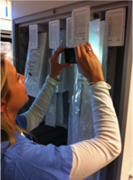Offline followups
After fielding sales calls, reps will return to their home office to correspond with the company at large, provide any virtual folio ups with clinicians (catalogues, manuals, etc.), and plan for their next days visit.
While many questions around product and pricing can be answered in the field with a quick email or phone call, reps often save more detailed work for at-home follow up.
Artifact Collection
Reps utilize a number of resources to assist them in their job. These include informational packets used in general product discussions, pricing sheets and inventory (which must be frequently updated), and sample products. They often keep home or car inventories of products for return and demonstration purposes.
Because of the data-intensive nature of their work, they will often keep all resources handy at all times. This requires them to carry along a supply bag, usually a pull cart. Some reps even create their own hand-carts if they are required to haul more equipment.
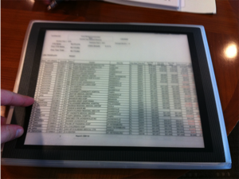 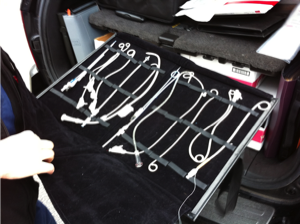 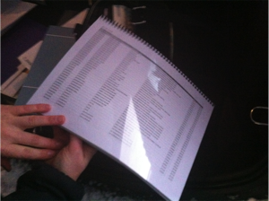 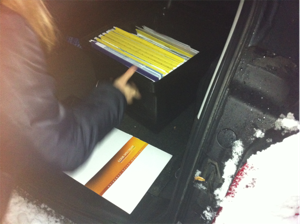 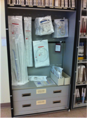Interactions
Customer interactions are core to rep life. These may include interactions with physicians, technicians, nurses and purchasers. These individuals have unique and differing needs, so a good rep is prepared to answer a variety of questions during any given conversation.
Reps often provide "in services", or ad-hoc information sessions with physicians and nurses while lunch is provided. This gives the physician the opportunity to pop-in, quickly speak to their rep (and perhaps grab a bite) and then pop out to deal with a patient.
Reps will often-times work together across specialities when common needs arise. For example, Interventional Radiology (IR) reps will often work with Peripheral Intervention (PI) when their physician-customer uses products across both lines in the same procedure. Good reps will usually have a short list of other reps across specialties that they interact with to relay information and support follow-ups.
All interactions contribute toward customer and company support in one way or another (rep-to-customer, rep-to-rep or customer-to-company). Interactions strengthen the customer network but also the personal network of reps within a territory.
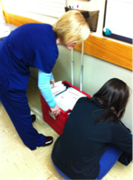 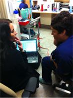Insights
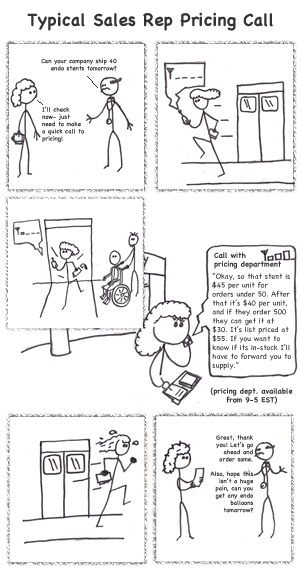Sales are long, information-intensive processes. They involve a number of parties interacting across medical device supplier and hospital. Reps are core to the purchase relationship at every level, making them an irreplaceable part of the medical device sales process.
Reps are self-starters by necessity and often require little intervention from their medical device company. Most needs are informational: either following up on product questions or (more often) inquiring about prices and availability. In fact, the most immediate need for reps at that time was up-to-date pricing information.
The biggest pain point: A common scenario involved a tech, nurse or doctor inquiring about pricing and product availability. Since prices and availability change day-to-day and vary by contract, reps needed to call their sales support to obtain this information. Since many of these discussions happened in radiology/IR departments (where there is limited cell availability), they would often have to run outside to get an adequate signal. By this time, the inquirer may have left for another appointment, missing the immediate sales opportunity.
For this reason, our team decided to focus on providing up-to-date pricing and product information, saving a trip outside, a phone call from sales operations, and hopefully retaining the attention of the customer
Design
Our design revolved around three goals/constraints:
- Fast and accurate pricing and product information
- Limited signal availability (e.g., low-to-no data availability scenarios)
- Relevant follow-ups with customers (quotes)
For these reasons, we decided a universal iPhone/iPad app would be more appropriate than web. Why? Because the data overhead of apps is much lower, reducing time spent loading data on transactions. Also, native apps are more conducive to storing information offline. Since this company was on 100% Apple devices, this seemed like a natural fit.
The had 3 basic screens:
- A login screen (for security reasons, reps would be logged out after 5 minutes)
- A customer/product lookup screen, where they could cache whole customer prices for fast access in limited-connectivity areas
- A quotes screen to manage drafts, compile quotes and lookup old quotes
The most difficult piece of the design was communicating the offline customer/product caching. Since these needed to be updated daily, we added warning flags on these customers to ensure the rep knew when something was up-to-date, and when it needed to be synced or pulled live from the server
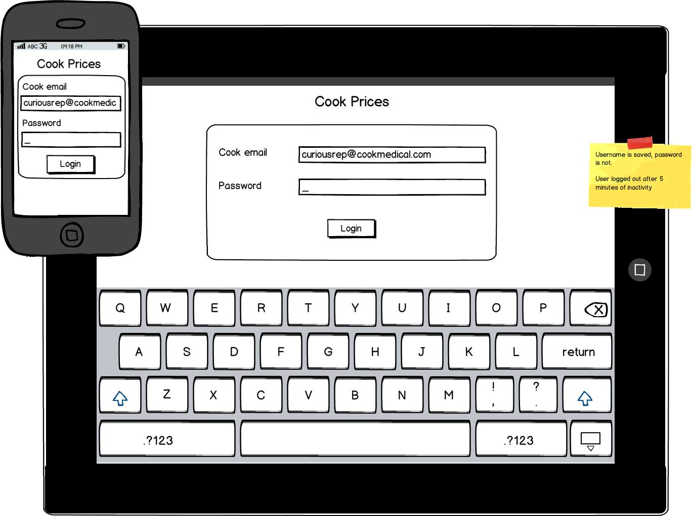 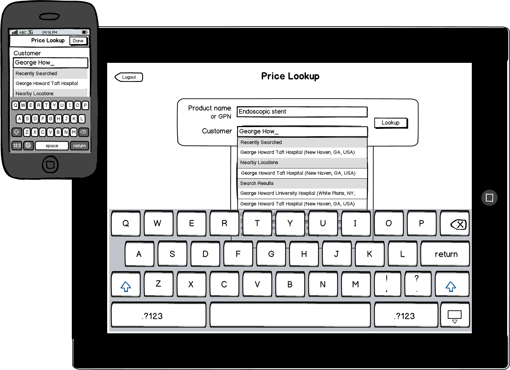 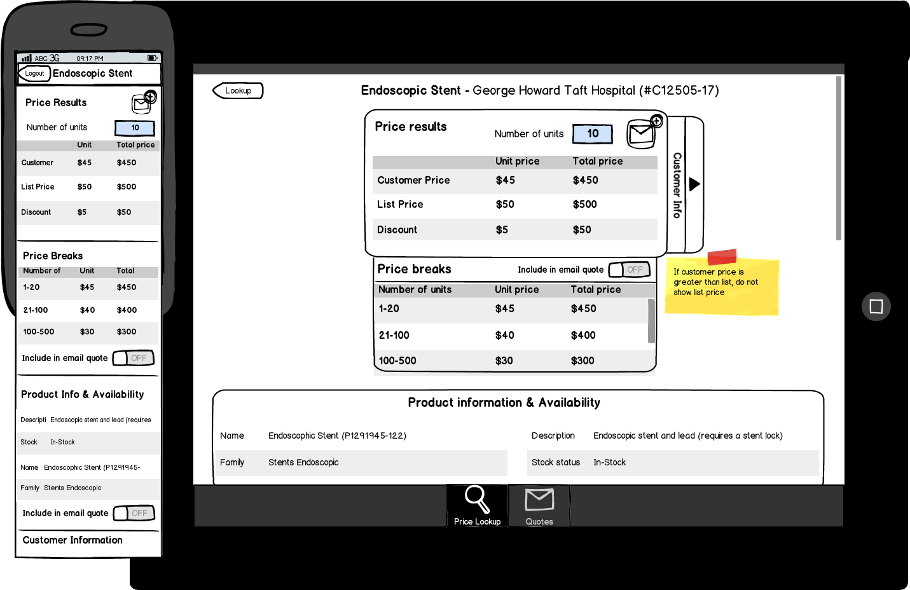 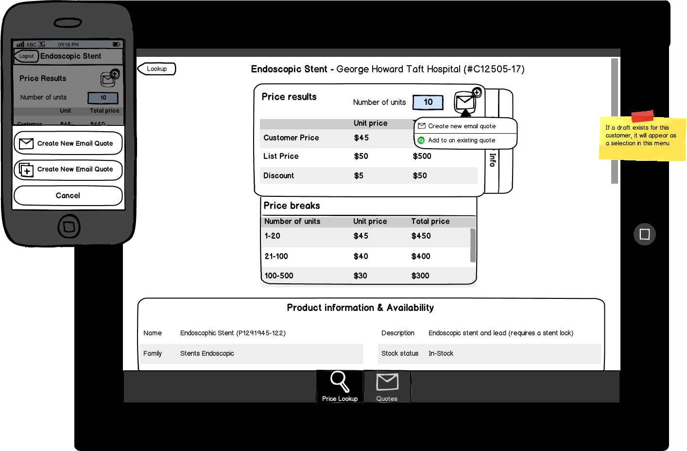 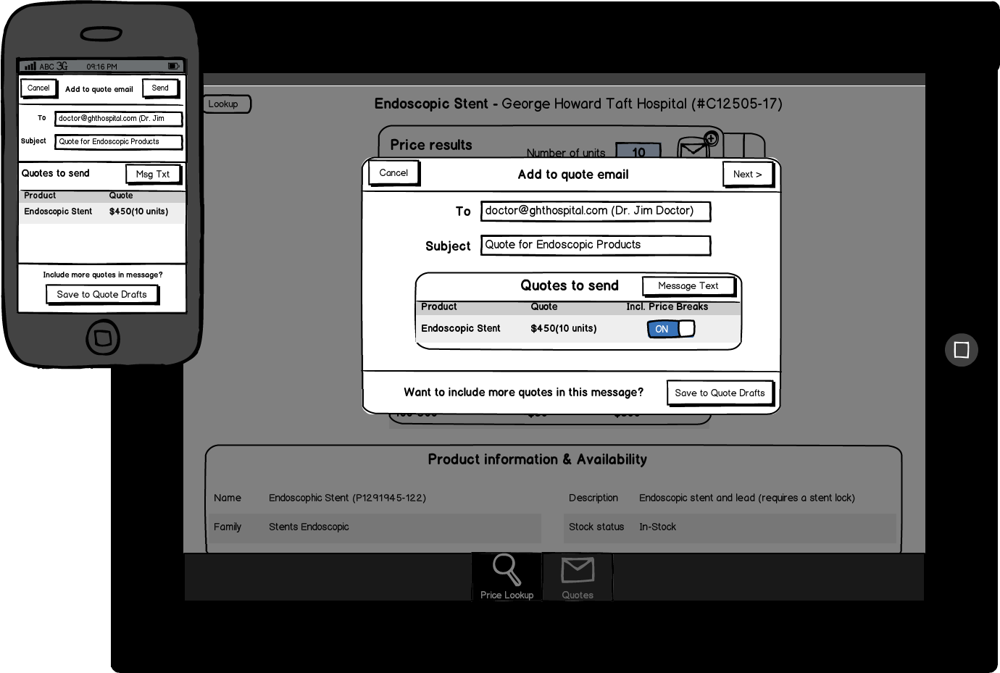 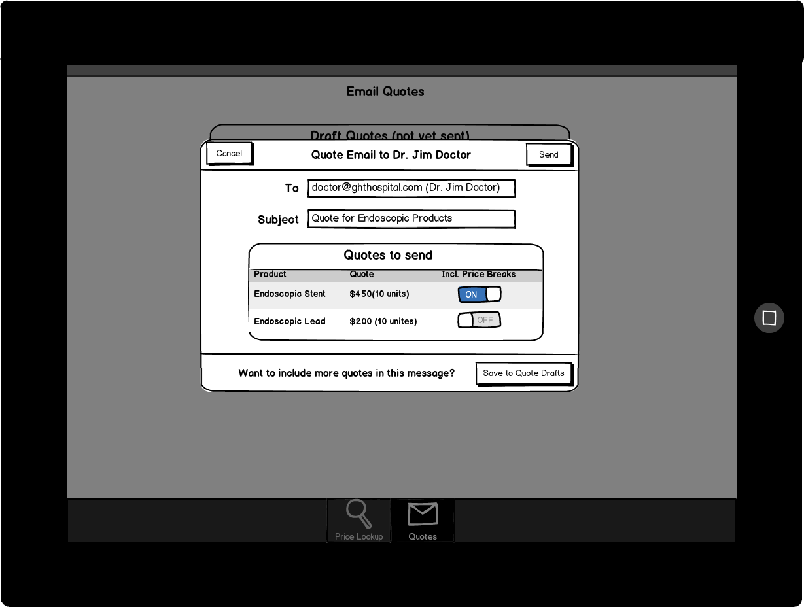
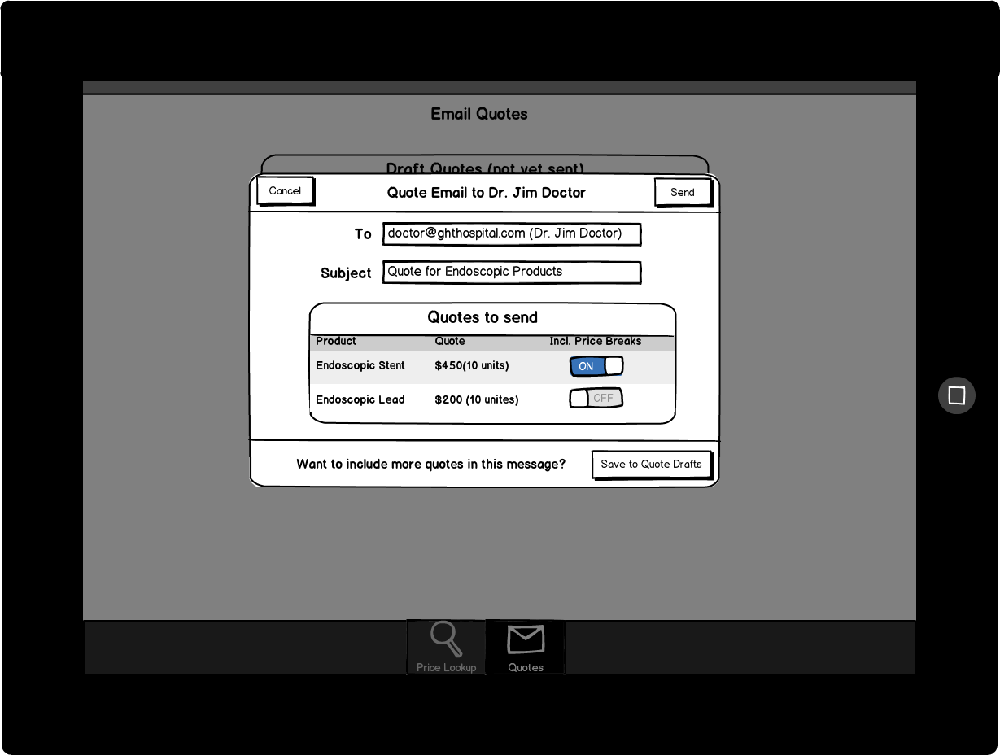
Outcome
The app is the most successful in the company's brief history with apps. It is used daily, with an average of 900 queries per day, saving on average 24 man-hours at the sales center, and increasing sales opportunities for reps.
Following the success of Prices, another rep communication app was created by myself on a contract basis. I worked for several months with our logistics department to connect this new mobile software to legacy JBASE databases via web services connections.
Both apps are still used and maintained to this day and enjoy a high level of appreciation within the company.